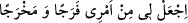

Râfızîler’in gulâtının/aşırı gidenlerinin yaptığı gibi Hz. Âişe (r.a.)’a zinâ nisbet eden
kâfir olur. Çünkü bunda Kur’an’ın naslarını tekzib etme söz konusudur. Onları tekzib
eden ise kâfirdir.
Hayâtü’l-hayevân’da Hz. Âişe (r.a.)’nın şöyle dediği nakledilmiştir: İnsanlar benim
hakkımda bu iftirâyı düzüp konuştuklarında rüyâmda genç bir kimse gördüm. Bana:
“Neyin var?” diye sordu. Ben de: “İnsanların zikrettiklerinden dolayı üzgünüm.” dedim.
Tekrar bana: “Şu sözlerle Allah’a duâ et, Allah senin sıkıntını giderecektir.” dedi. Ben
de: “Nedir o sözler?” diye sordum. “Şöyle söyle” dedi:
Ey nimetleri saçan, ey belâları def ’ eden, ey üzüntüleri dağıtan, ey karanlıkları
aydınlığa çeviren, ey hükmedince âdil davranan, ey zulmedeni hesâba çeken, ey
bidâyeti olmayan evvel, ey nihâyeti olmayan âhir! Bana içinde bulunduğum
durumdan bir ferahlık ve çıkış yolu göster!”
Uyandım ve bu duâyı okudum. Hemen Allah suçsuzluğumu bildirip beni rahata
kavuşturdu.”
Bazıları demişlerdi ki Allah dört kişiyi dört şeyle temize çıkarmıştır:
1- Yûsuf (a.s.)’ı Züleyhâ’nın akrabalarından bir şâhid ile,
2- Mûsâ (a.s.)’ı Yahudilerin kendisinin uzvî bir hastalığı olduğu hakkındaki
iddiâlarından (yıkanırken) elbiselerini kapıp kaçan/yuvarlanan bir taş ile,
3- Hz. Meryem’i oğlunu (beşikte) konuşturarak,
4- Hz. Âişe (r.a.)’yı da bu âyetlerle temize çıkarmıştır.
Bu âyetlerin nüzûlünden sonra Peygamberimiz (a.s.) insanların yanına çıktı, onlara
hitâb etti ve bu âyetleri onlara okudu. Sonra da Hz. Âişe hakkında bu asılsız iftirâyı
düzenlere seksener sopa vurulmasını emretti.
Hz. Âişe (r.a.)’dan rivâyet edildiğine göre iftirâyı ilk ortaya atan Abdullah b. Übey’e
yüz altmış sopa, yâni iki had vurulmuştur. Abdullah b. Ömer (r.a.), “Bir peygamberin
eşine iftirâ eden herkese böyle yapılır.” demiştir. Yâni ona böyle cezâ verilmesi câiz
olur.
el-Hasâisu’s-suğrâ’da der ki: “İbn Abbâs (r.a.) ve başkalarının dedikleri gibi
Rasûlullah (s.a.)’in eşlerine iftirâ eden kimsenin asla tevbesi kabul olunmaz. Kâdî ve
başkalarının naklettiğine göre ise böyle bir kimse öldürülür. Öldürme cezâsının Hz.
Âişe’ye iftirâ eden kimseye mahsus olduğu, Efendimiz’in diğer eşlerine iftirâda bulunan
kimseye ise iki had vurulacağı da söylenmiştir. Nitekim İnsânü’l-uyûn’da böyle
geçmektedir.
İbn Abbâs (r.a.)’dan nakledildiğine göre hiçbir peygamber hanımı asla zinâ
etmemiştir. Nûh ve Lût (a.s.)’ın hanımları hakkında “onlar kocalarına hâinlik ettiler